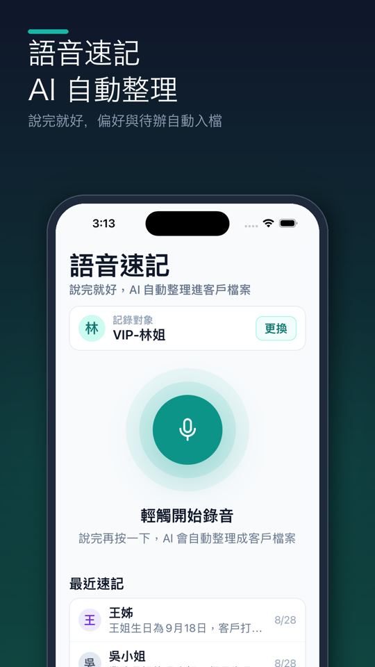

語音速記教學：接待完講 30 秒，客人資料自動整理好
情境：週六下午，王小姐來試戴戒指，試了兩克拉的祖母綠，說女兒十二月結婚想找一條配的墜子，預算二十萬左右。她走了之後下一位客人馬上進門——你沒有時間打字。
這時候打開熟客簿講 30 秒就好：AI 會把你說的話整理成王小姐的偏好、尺寸、願望清單和下次聯絡的提醒，存進她的客戶檔案。

操作步驟
打開「語音」分頁
點畫面下方的 語音 分頁；如果已經在王小姐的客戶檔案裡，也可以直接點上方的 語音 按鈕，會自動帶入她。
選擇記錄對象
點 記錄對象 卡片右邊的 選擇，用 搜尋暱稱或姓名… 找到王小姐。如果是第一次來的新客人，先到 客戶 分頁建立客戶檔案再回來。
按一下開始講，講完再按一下
輕觸中間的麥克風就開始錄音，畫面會顯示 錄音中 · 再按一下結束。一次最長 3 分鐘，少於 3 秒會被當成太短不採用。
確認後送出 AI 分析
錄好後會出現 錄好了 卡片，確認沒問題點 送出 AI 分析；想重講就點 捨棄重錄。
看 AI 解析結果，存入客戶檔案
約十幾秒後會看到 AI 解析結果：摘要、逐字稿、偏好與特徵、願望清單。內容沒問題就點 存入客戶檔案；如果 AI 聽錯了，點 捨棄 再錄一次。
到客戶檔案確認
打開王小姐的客戶檔案，互動歷史、偏好與特徵、願望清單 和 提醒 都會更新；講到生日或紀念日的話，會記進 重要日子 並每年自動提醒。
小技巧
- 照這個順序講最好整理：誰 → 看了什麼 → 尺寸與喜好 → 預算 → 什麼時候再聯絡。例如：「王小姐今天試戴兩克拉祖母綠，戒圍 11 號，喜歡鉑金，女兒十二月結婚想找墜子，預算二十萬，下週三再聯絡她。」
- 講「下週三」「月底」也可以：AI 會換算成實際日期設提醒。
- 不要講敏感資料：宗教、病史等不需要記錄，也請取得客人同意再記錄個人資料。
常見問題
- AI 聽錯了可以改嗎？
- 解析結果頁不能直接修改；聽錯的話點「捨棄」重新錄一次，或存入後到客戶檔案裡修改偏好與願望清單。
- 新客人可以直接用語音建立嗎？
- 語音速記要先選一位已建立的客戶；新客人請先在「客戶」分頁建立客戶檔案，再用語音記錄。用 LINE 速記時則可以直接選「建新客戶」。
- 一天可以用幾次？
- AI 分析每天有次數上限（語音速記與 LINE 速記共用），快用完時語音頁上方會提醒剩幾次，每天午夜重置；「設定 → 方案」也看得到今天剩餘次數。
- 講話中英夾雜可以嗎？
- 可以用你平常的說法講，例如品牌或款式名稱用英文；如果整理結果不對，捨棄後講慢一點、清楚一點再試一次。
想直接試試看？
熟客簿是給第一線銷售顧問用的客戶管理 App：講 30 秒記好客人、生日回訪自動提醒、新貨到了幫你找出該通知誰。免費試用 14 天，不用綁信用卡。